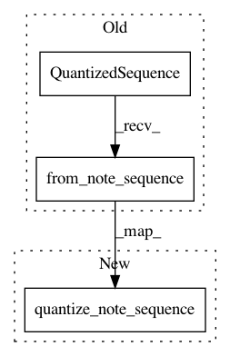

a146d001bf63734851d5a02c2b96d1ef29a61e96,magenta/pipelines/pipelines_common.py,Quantizer,transform,#Quantizer#Any#,37
Before Change
self._steps_per_quarter = steps_per_quarter
def transform(self, note_sequence):
quantized_sequence = sequences_lib.QuantizedSequence()
try:
quantized_sequence.from_note_sequence(note_sequence,
self._steps_per_quarter)
return [quantized_sequence]
except sequences_lib.MultipleTimeSignatureException as e:
tf.logging.debug("Multiple time signatures found in NoteSequence %s: %s",
note_sequence.filename, e)
After Change
def transform(self, note_sequence):
try:
quantized_sequence = sequences_lib.quantize_note_sequence(
note_sequence, self._steps_per_quarter)
return [quantized_sequence]
except sequences_lib.MultipleTimeSignatureException as e:
tf.logging.debug("Multiple time signatures found in NoteSequence %s: %s",
note_sequence.filename, e)
In pattern: SUPERPATTERN
Frequency: 3
Non-data size: 3
Instances
Project Name: tensorflow/magenta
Commit Name: a146d001bf63734851d5a02c2b96d1ef29a61e96
Time: 2016-11-15
Author: curtis@thefjord.org
File Name: magenta/pipelines/pipelines_common.py
Class Name: Quantizer
Method Name: transform
Project Name: tensorflow/magenta
Commit Name: a146d001bf63734851d5a02c2b96d1ef29a61e96
Time: 2016-11-15
Author: curtis@thefjord.org
File Name: magenta/music/sequences_lib_test.py
Class Name: SequencesLibTest
Method Name: testStepsPerBar
Project Name: tensorflow/magenta
Commit Name: a146d001bf63734851d5a02c2b96d1ef29a61e96
Time: 2016-11-15
Author: curtis@thefjord.org
File Name: magenta/models/melody_rnn/melody_rnn_sequence_generator.py
Class Name: MelodyRnnSequenceGenerator
Method Name: _generate